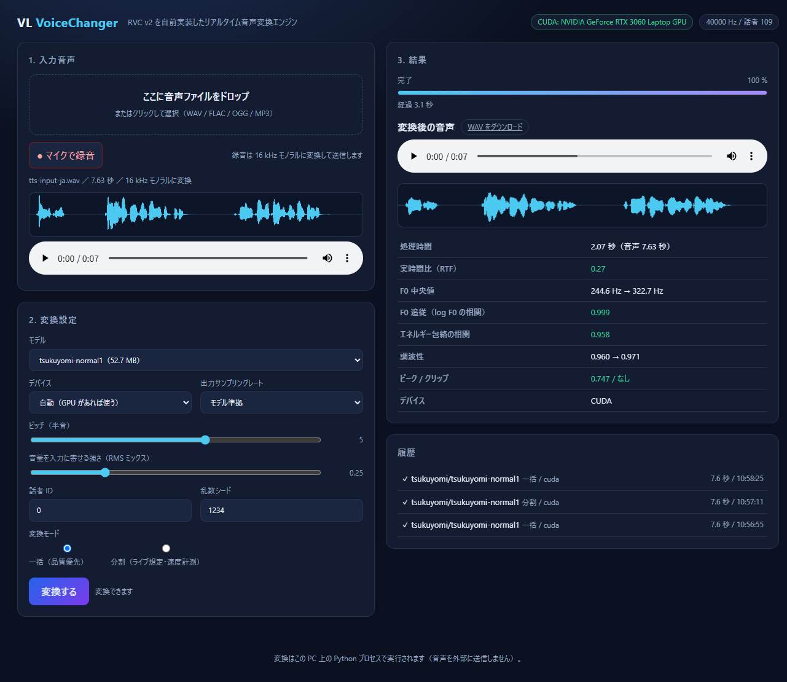

A
OWN ENGINE
依存先を選べる、自前の変換エンジン
PyTorch と ONNX Runtime で WAV → WAV 変換を実装。VC Client に依存しない経路も持ち、処理を分解して速度と品質を計測できます。
$ python -m vlvc convert \
-m model.pth -i voice.wav -o out.wavVirtual live voice conversion / Proof of concept
演者ひとりの声を、RVC モデルで別のキャラクターへ。変換エンジン、操作画面、計測、運用手順までをひとつにした実証プロジェクトです。
※ リポジトリ内の検証記録に基づく一例です。端末・モデル・設定で変動します。
音声変換の品質だけでなく、導入、設定、再現性、処理時間、トラブルからの復旧まで。本番で判断できる材料を、コードと記録の両方で残します。
OWN ENGINE
PyTorch と ONNX Runtime で WAV → WAV 変換を実装。VC Client に依存しない経路も持ち、処理を分解して速度と品質を計測できます。
$ python -m vlvc convert \
-m model.pth -i voice.wav -o out.wavBROWSER UI
ドラッグ＆ドロップ、マイク録音、変換、波形・指標の比較、WAV 保存に対応します。
REPRODUCIBLE
キャラクター別プロファイル、環境診断、安定性レポート、運用・復旧手順をリポジトリで管理します。
重い処理はローカル PC で実行。ブラウザは操作と試聴に集中します。
WAV / FLAC / OGG
またはマイク録音
定常ノイズと
電源ハムを低減
F0 推定・特徴抽出・
キャラクター音声合成
F0・明瞭さ・音量・
遅延を数値化
波形を比較して
試聴・ダウンロード
入力音声と変換後の波形を並べ、処理時間や F0 追従などをその場で確認。感覚だけに頼らず、次の設定へ進めます。

これは完成品を装うページではなく、実証の現在地を共有するページです。公開ページ自体は NeoShowcase で配信できますが、音声変換はローカル環境で動作します。
Python 3.10 以上と対応モデルを用意して、ローカル Web UI を起動します。モデルの利用条件とクレジットは、必ずドキュメントを確認してください。
# 1. 依存関係をセットアップ
$ python -m vlvc setup
# 2. 環境を診断
$ python -m vlvc doctor
# 3. ローカル Web UI を起動
$ python -m vlvc serveOPEN DEVELOPMENT